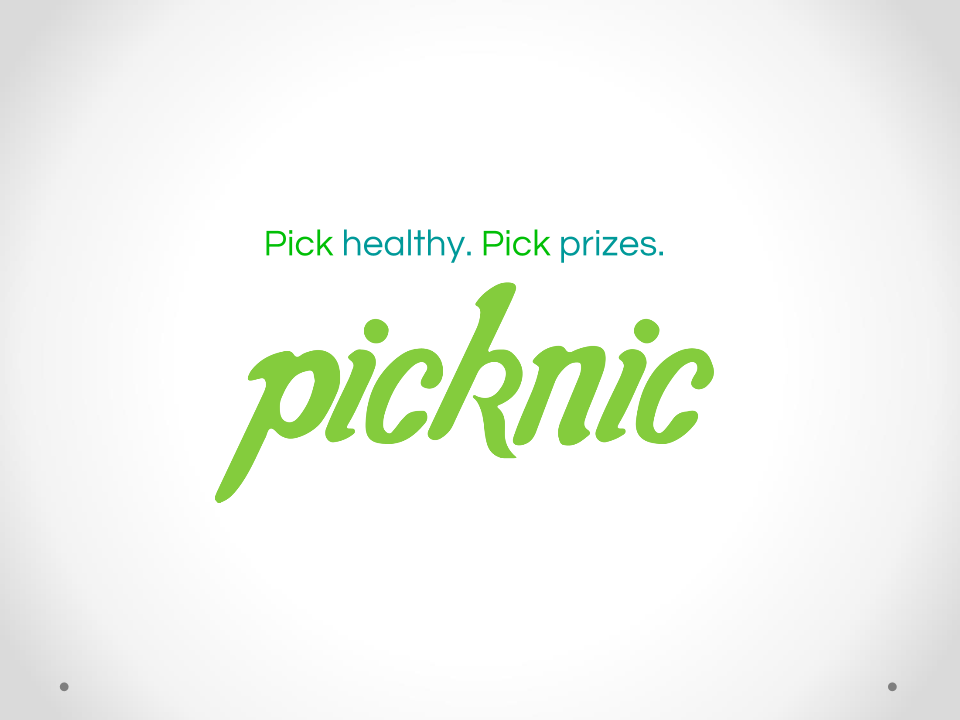
Problem
Obstacles to buying healthy foods include insufficient nutrition
knowledge, higher price of healthy foods, and unhealthy eating habits
propagated by the media. Picknic simplifies the process of identifying
healthy foods by assigning single-number nutrition scores to grocery
items. Picknic helps users build long-term healthy habits through a
points reward system that allows users to earn tangible prizes, coupons,
and raffle tickets by buying healthy groceries. In addition, Picknic
utilizes social encouragement and gamification to foster sustainability
in healthy grocery purchases. Thus, Picknic re-brands healthy eating as
financially desirable. For its corporate clients, Picknic’s user-specific
newsfeed provides a tailored and effective advertising platform and its
customer data provides valuable insight in product improvement. Through a
forward-moving and multidimensional approach, Picknic creates an impact in
targeting the obesity epidemic.
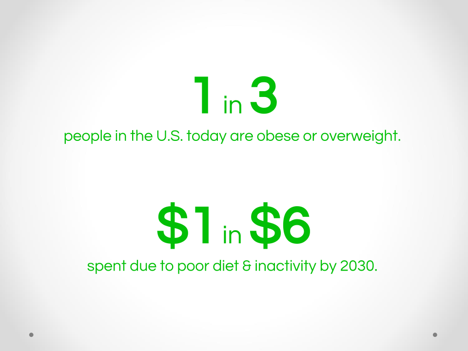
User Research
This support for a solution resonates with the results of our
preliminary survey of college students, in which 89% of respondents
stated price as the factor preventing them from purchasing healthy
foods and 80% of respondents said that they would increase their
purchases at Trader Joes (R), a potential paying customer, if
discounts were offered. In addition, we have established contact
with Culination (R) Culinary Director Chef MikeC a prospective
partner who has also agreed to introduce us to John Mackey, the
CEO of WholeFoods.
Features of Last Design
Gamification and Easy to Use
Our mobile application, Picknic, incentivizes people to buy healthier
groceries through a simple, fun, and engaging platform. Users simply
snap a picture of their grocery receipt and a list of purchased items
populates the Picknic app. From there, points are awarded to each item
based on its nutrition ranking. Foods are rated based on a comprehensive
algorithm developed by our partner, Nuval, that takes into account
ingredients, calories, fat content, macronutrients, and micronutrients.
The healthier the food item, the more points are awarded. Users can
use the points earned by buying healthy groceries to redeem real, tangible
prizes such as free smoothies or a free week of salsa classes.
Additional
incentives to buy healthy come from the social and gamification aspects of
the application. Users are connected to their network of Facebook friends
who have Picknic, and a leaderboard featuring friends with the most points
offers friendly competition. In addition, friends can create “Group Goals”
where each member contributes part of the total points needed for a prize,
such as a four-person ski trip. In addition, users can also access their
personal NewsFeed which features content such as “Daily Deals” from
grocery partners, Healthy Tips, and insights into friend activity.
Furthermore, users can search for product nutrition scores on the mobile
application as well as on the Picknic website. Appealing to both to the
intrinsic and extrinsic needs of customers, Picknic gamifies buying healthy
food and rebrands it as a fun, social, and sustainable choice.
Version 2 Designs
Scan Your Receipt
Easily scan your receipt and automatically add points from purchasing healthy food.
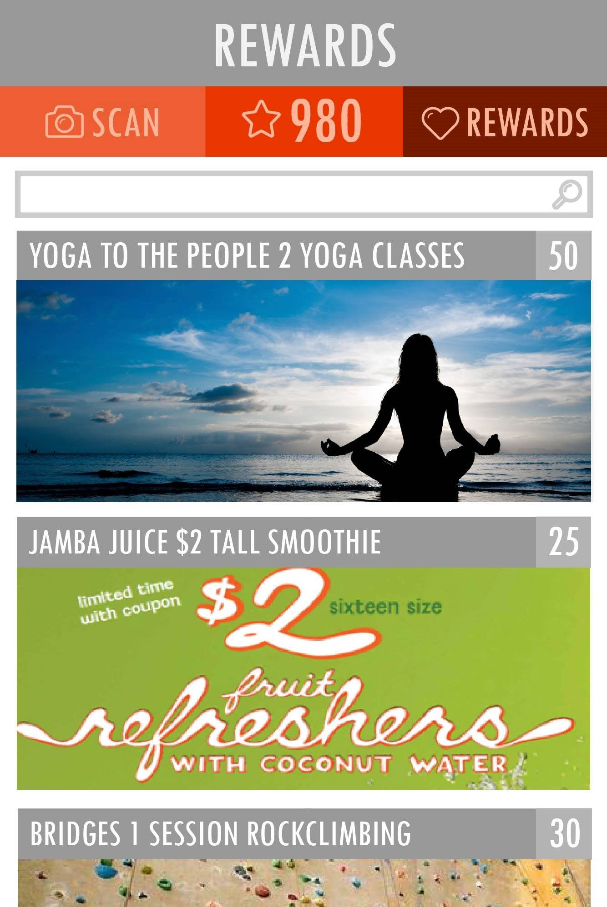
Points to Real Life Rewards
Use your points to get rewards. You can search through a huge selection of healthy and active
lifestyle options.
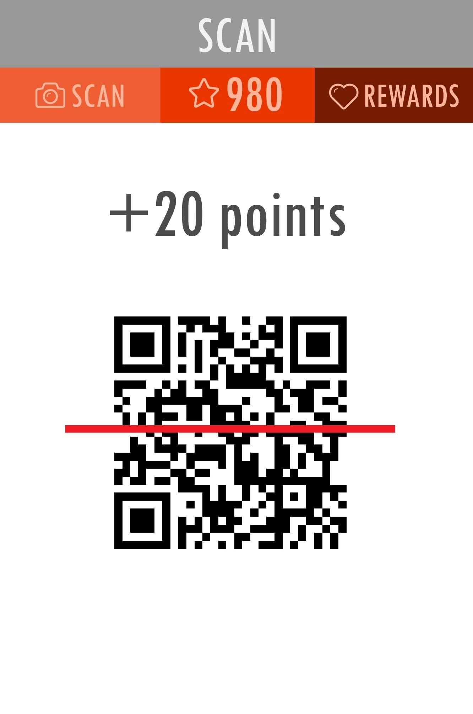
Keep Track of Rewards
Keep track of your rewards and redeem them for those benefits.
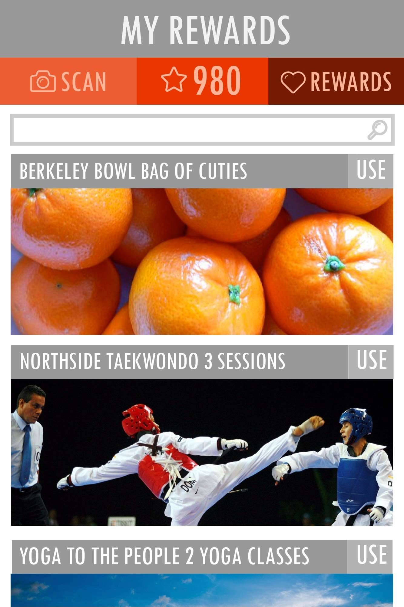
Version 1 Designs
A collaboration with Victor Sutarjia who did most of the graphics and I
did the layouts, flows, screen generations, and interaction.
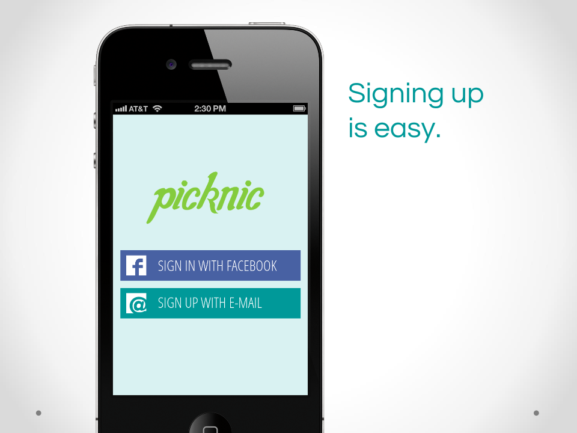
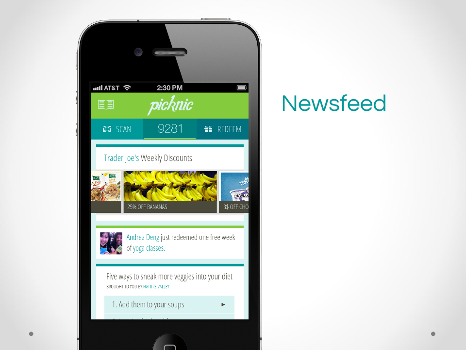
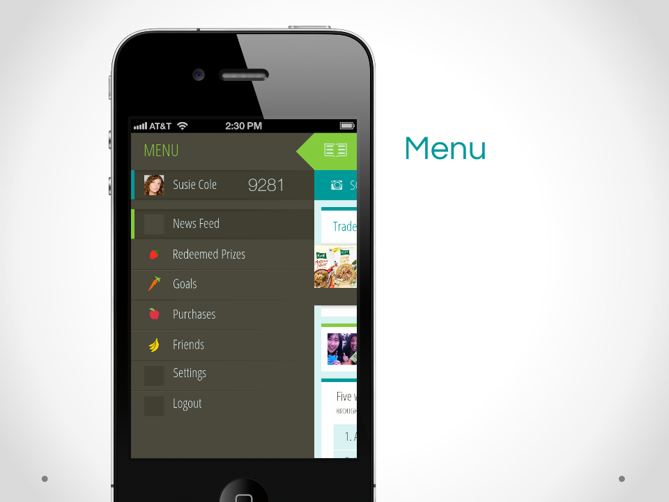
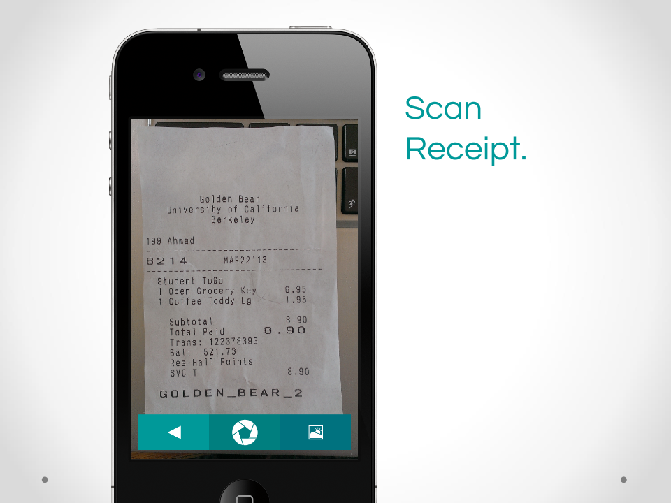
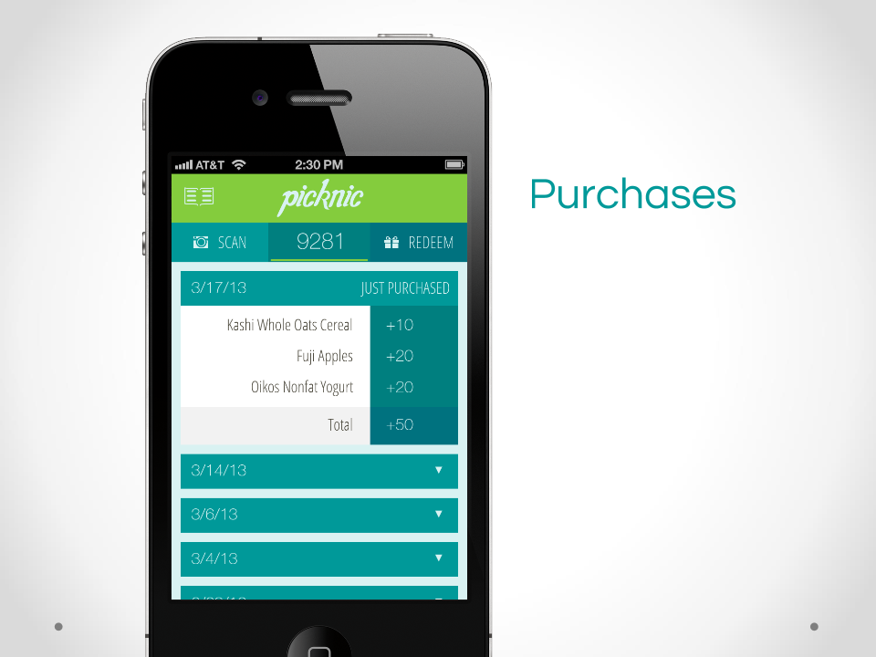
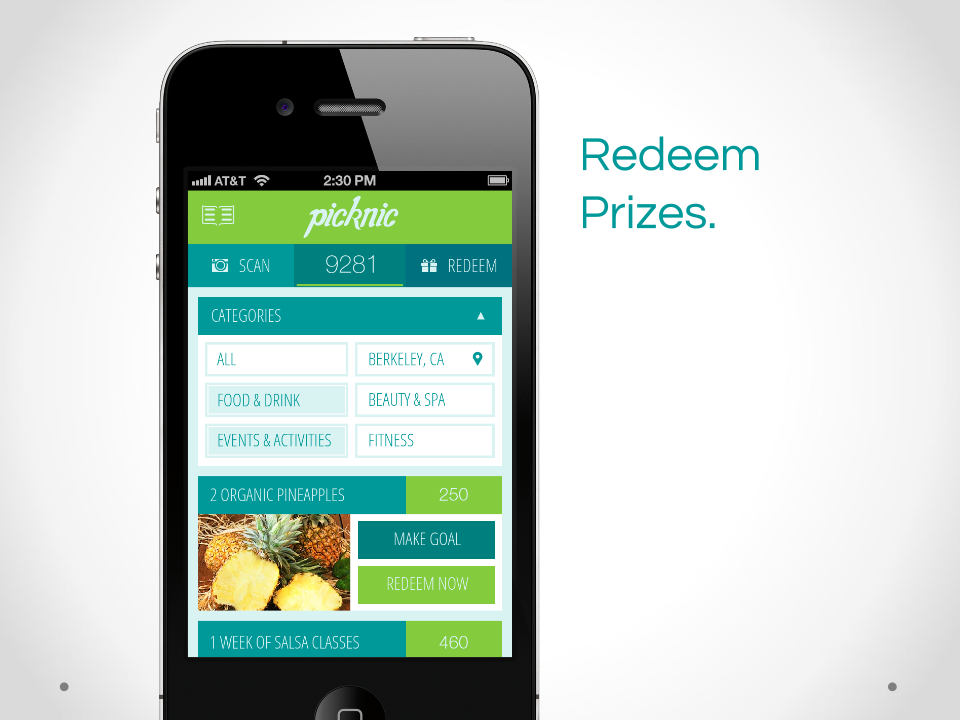
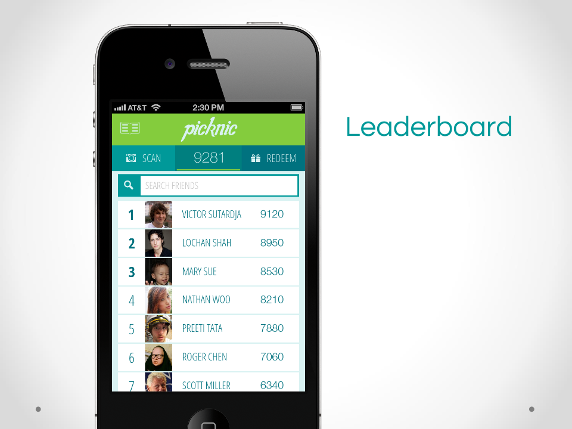
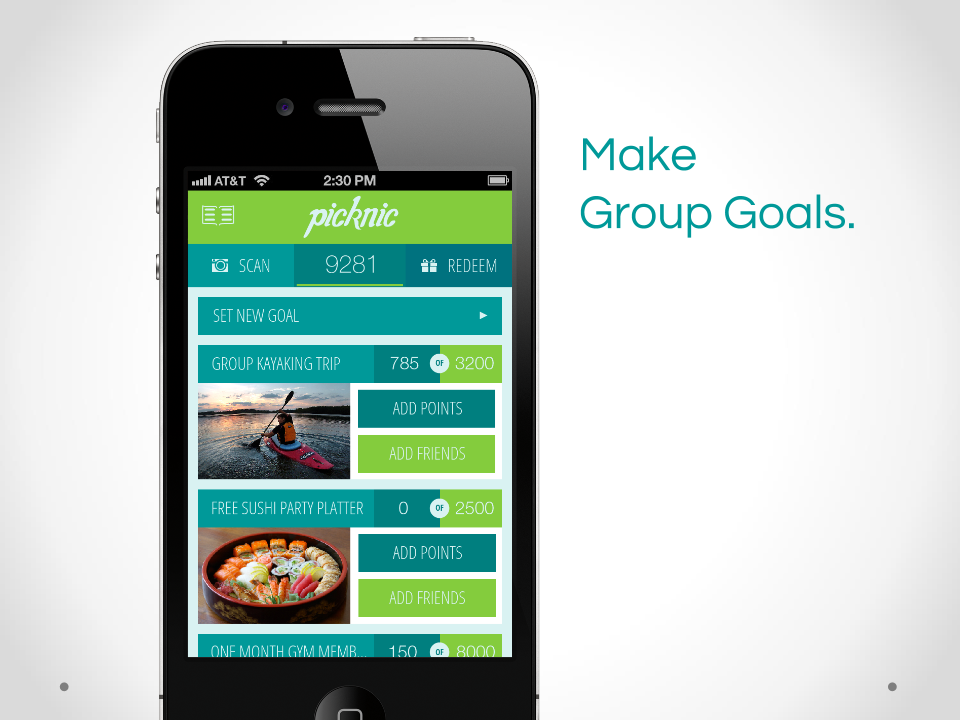
Advertisting/Business Features
Picknic has a targeted advertising model where businesses can purchase
advertising spots on the Newsfeed as well as promote their products through
offering prizes and coupons to reward customers for brand loyalty.
The application utilizes users’ data on past purchases and prize choices to
display relevant advertisements, optimizing the benefit for the user and
effectiveness for the company. In addition, Picknic shares insights about
consumer preferences to help companies better understand their target market,
allowing companies to develop better products. Picknic also rewards companies
who partner with or sponsor Picknic by featuring their Picknic has a targeted
advertising model where businesses can purchase advertising spots on the Newsfeed as well as promote their products through offering prizes and coupons to reward customers for brand loyalty. The application utilizes users’ data on past purchases and prize choices to display relevant advertisements, optimizing the benefit for the user and effectiveness for the company. In addition, Picknic shares insights about consumer preferences to help companies better understand their target market, allowing companies to develop better products. Picknic also rewards companies who partner with or sponsor Picknic by featuring their products and brand stories on the website and Newsfeed.
Featured
-
We pitched Picknic at the 2013 Global Health and Innovation
Conference at Yale University, where Jacqueline DePasse
expressed interest in becoming an early investor as well as
in taking on a position as a Board member.
Take a look at our
pitch slides.
-
Conversations on Healthcare Radio (R) interviewed us and
featured us as a disruptive force at the intersection of
preventative healthcare and technology.
-
We presented at the Innovate@Berkeley Expo in early April 2013,
where we received significant interest and beta test signups
from attendees.
Lessons Learned
I learned a ton about communication with potential users, customers, and business
partners. Picknic was the project that began my design journey. I designed Picknic
without putting a name to what I was doing. I thought I was just trying to solve a problem,
only later realizing I was using elements of the design process without formalizing
that knowledge. In fact the first time I heard design, specifically
human centered design at an IDEO workshop at the 2013 Global Health and Innovation
Conference at Yale University. After that, I decided to look into design more and
look at what classes and clubs UC Berkeley had regarding this area. After challenges
in contacting anyone, I was sitting in the last Berkeley Innovation meeting that Spring
semester my Freshman year. The following year I would join Berkeley Innovation,
the human centered design club at Berkeley, discontinue my work with Picknic and delve into
design.